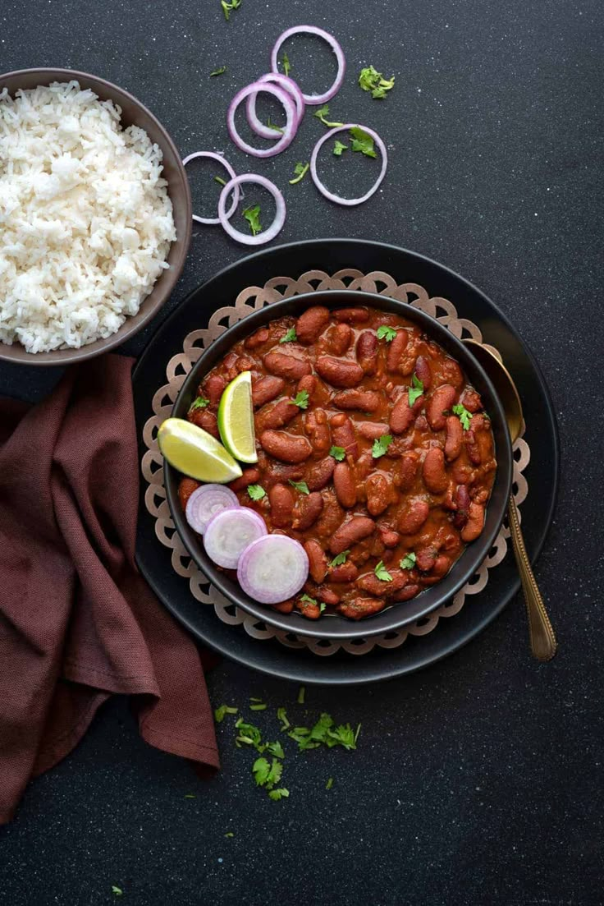

Rajma Chawal
A hearty and comforting North Indian dish made with red kidney beans simmered in a spiced tomato gravy, served with steamed rice.

Ingredients
- 1 cup rajma (red kidney beans)
- 2 cups cooked rice
- 1 onion, finely chopped
- 2 tomatoes, pureed
- 1 tsp ginger-garlic paste
- Spices: cumin, turmeric, chili powder, garam masala
- Salt to taste
- Fresh coriander for garnish
Instructions
- Soak rajma overnight and pressure cook until soft.
- In a pan, sauté onions and ginger-garlic paste until golden.
- Add tomato puree and spices. Cook until oil separates.
- Add cooked rajma and simmer for 20–25 minutes.
- Garnish with coriander and serve hot with rice.